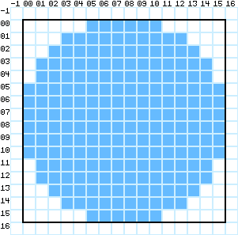
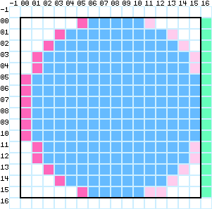

On RegionsSeptember 18th, 2021
On RegionsSeptember 18th, 2021
Regions are a data structure used in the Macintosh's QuickDraw that generate an irregular shape and then force graphics to only be drawn within said shape (like a clipping mask).
The most obvious method of implementing this would be to create a bitmap the same size as your target with two values - on and off - and then XOR what you're drawing and the bitmap to get a clipped image. This has the obvious flaw, though, of duplicating data. If you've got a 100x100 image, then you're using 2000 pixels worth of data, which can be a real issue if you're trying to save memory.
A more memory efficient method of this is to only keep track of the information you need. Because you've only got two values, you can think of every line of your region bitmap as a set of inversion points, which are X coordinates that toggle the coming pixels from off to on (or vice versa). From here, you only need to keep track of the inversion points. If your region is made up of very regular shapes, then this can save a lot of horizontal space.
Then, you can group each set of inversion points by their Y coordinates. By comparing each group to the group above it, you can determine if there are changes or if there are not. Then, all groups that don't change get discarded, leaving you with only the information you need to extrapolate the rest.
As an example, here is a 16x16 bitmap.
In order to store this bitmap as a region, the first thing that needs to be done is determine the inversion points - where we switch from a sequence of offs to a sequence of ons (we assume pixels are off by default).
Marked in red are the inversion points. Marked in green are the line endings.
We then construct a list of inversion points, in the following arrangement:
| Y | X | Line Ending | |
| 00 | 05 | 11 | EOL |
| 01 | 03 | 13 | EOL |
| 02 | 02 | 14 | EOL |
| 03 | 01 | 15 | EOL |
| 04 | 01 | 15 | EOL |
| 05 | 0 | EOL | |
| 06 | 0 | EOL | |
| 07 | 0 | EOL | |
| 08 | 0 | EOL | |
| 09 | 0 | EOL | |
| 10 | 0 | EOL | |
| 11 | 01 | 15 | EOL |
| 12 | 01 | 15 | EOL |
| 13 | 02 | 14 | EOL |
| 14 | 03 | 13 | EOL |
| 15 | 05 | 11 | EOL |
Note that each Y coordinate has multiple X coordinates - that is because there are multiple inversions per line. Also important to mention are that lines don't have a specified length; because they have only a definite start and end, their middle can be as long as required. This means that a line could theoretically expand to be the entirety of the usable memory if required.
This information can be compressed even further by discarding duplicate rows, leaving us with the following:
| Y | X | Line Ending | |
| 00 | 05 | 11 | EOL |
| 01 | 03 | 13 | EOL |
| 02 | 02 | 14 | EOL |
| 03 | 01 | 15 | EOL |
| 05 | 0 | EOL | |
| 11 | 01 | 15 | EOL |
| 13 | 02 | 14 | EOL |
| 14 | 03 | 13 | EOL |
| 15 | 05 | 11 | EOL |
Obviously, on a real system, a region this small would be somewhat pointless because of the size of an INT being larger than the size of a plain bitmap. However, for large overlapping rectangular regions like what we'd see in a windowing system, this method can save a lot of space compared to a raw bitmap. On top of this, due to its nature of being built out of scan lines, it is extremely easy to hook this format of region into a Blit function that generates a mask for each line on the fly, meaning that it can be extremely performanct as well (as opposed to compression by, say, zlib).